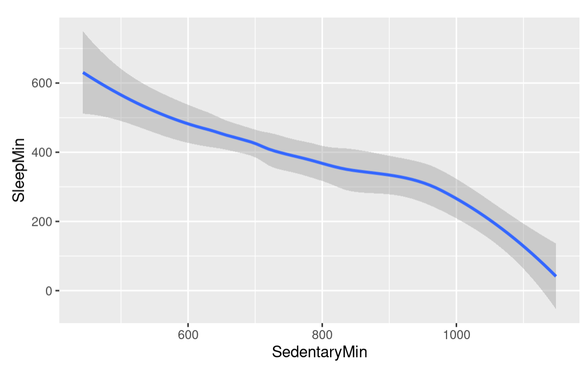
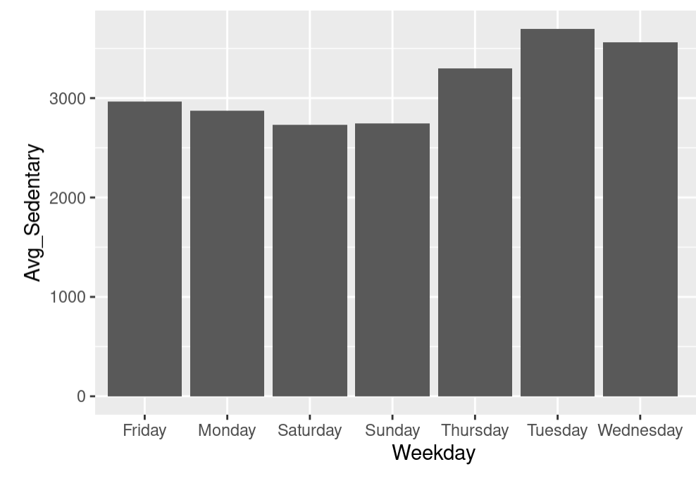

What Makes a Healthy/Happy User?
After some research, the statistics deemed ideal for adult women are:
- Recommended to get between 7-9 hours of sleep a night
- Recommended to get around 10,000 steps a day
- Recommended to burn around 2,000 calories a day
To begin my analysis I began using SQL. I wanted to see how often these goals were beat. There were 940 unique days logged for the 30 users. Of those days, 61% (571 days) beat the calorie goal, and only 32% (303 days) bat the step goal. Important distinction, for the sleep data, there were only 24 users that submitted data, and not every night was logged. There are 413 unique nights of sleep data, of those 46% (191 days) beat the sleep goal. Based on the data that I have, I'm going to use R for visualizations to help round out my analysis. Click here is my R analysis.
Summary
I focused on sleep and how the data collected affected that. Of the 413 days that were logged, only 46% were a full recommended night's sleep. My original hypothesis was proven wrong, that active minutes had a correlation to sleep time. In fact, it was sedentary time that had a negative correlation with sleep. So the more time spent sedentary, the less sleep users got. Excluding normal sleeping hours, 5AM-8AM had the lowest amount of activity logged. Friday, Tuesday, and Thursday have the lowest average sleep hours, overlapping slighlty with the days with the highest average sedentary days, Tuesday, Wednesday, and Thursday.

